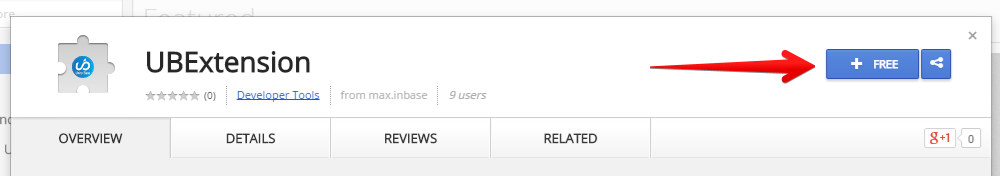
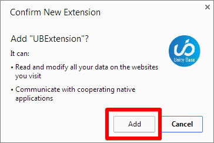
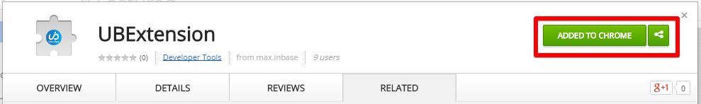
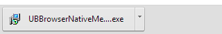
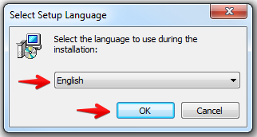
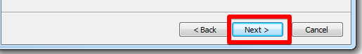

Обязательное программное обеспечение:
Необходимо установить Google Chrome для дальнейшей работы с программным обеспечением
Установка дополнения
- Пройдите по ссылке UnityBase extension, чтобы установить дополнение
- Нажмите на кнопку +FREE, как это показано на рисунке: 
- Подтвердите желание установить это дополнение, как это показано на рисунке: 
- Убедитесь в успешной установке дополнения, как это показано на рисунке: 
- Пройдите по ссылке UnityBase plugin, чтобы установить плагин. В нижней части Google Chrome появится скачанная программа: 
- Нажмите на эту кнопку, чтобы запустить программу установки плагина
- Выберите из списка язык установки и нажмите кнопку OK для продолжения: 
- Далее на всех окнах жмите кнопку "Next >" до окончания установки: 
Дополнительная информация
- Управляйте дополнением на странице расширений. Подробнее об управлении расширениями
- Удаляйте дополнения на странице расширений. Подробнее об удалении расширений.